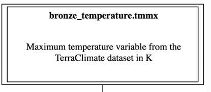

Tutorial: Constructing data dictionaries and lineage graphs
This tutorial demonstrates how to construct a data dictionary and lineage graph for a climate analysis workflow built in the Building a workflow Tutorial.
What we can generate
Dorieh provides an integrated dictionary and lineage utility that analyzes your workflow and domain definition file (such as example1_model.yml) to automatically generate a full suite of human-and machine-readable documentation with a comprehensive data dictionary along with graphical lineage diagrams — both at the table and the column level.
The content of example1_model.yml
1tutorial:
2 header: true
3 quoting: 3
4 index: "unless excluded"
5 description: "Data model for data transformation tutorial"
6 tables:
7 bronze_temperature:
8 description: |
9 Maximum daily temperature for US Zip Code Tabulation Areas
10 columns:
11 - tmmx:
12 type: float
13 description: Maximum temperature variable from the TerraClimate dataset in K
14 reference: https://developers.google.com/earth-engine/datasets/catalog/IDAHO_EPSCOR_GRIDMET#bands
15 - date:
16 type: date
17 - zcta:
18 description: Zip Code for a Zip Code Tabulation Area
19 type: int
20 primary_key:
21 - zcta
22 - date
23 silver_temperature:
24 description: |
25 Maximum daily temperature for US Zip Code Tabulation Areas, enriched and harmonized
26 create:
27 type: view
28 from: bronze_temperature
29 columns:
30 - tmmx
31 - date
32 - zcta
33 - temperature_in_C:
34 type: float
35 description: Temperature in Celsius
36 source: (tmmx - 273.15)
37 - temperature_in_F:
38 type: float
39 description: Temperature in Fahrenheit
40 source: ((tmmx - 273.15)*9/5 + 32)
41 - us_state:
42 type: VARCHAR(2)
43 description: US State
44 source: "public.zip_to_state(EXTRACT(YEAR FROM date)::INT, zcta)"
45 - city:
46 type: VARCHAR(128)
47 description: >
48 Name of a representative city for the ZIP Code Tabulation Area (ZCTA);
49 for ZCTAs spanning multiple cities, this is the city covering the largest
50 portion of the area or population.
51 source: "public.zip_to_city(EXTRACT(YEAR FROM date)::INT, zcta)"
52
53 gold_temperature_by_state:
54 description: |
55 Temperature variations by US State
56 create:
57 type: materialized view
58 from: silver_temperature
59 group by:
60 - us_state
61 - date
62 columns:
63 - us_state
64 - date
65 - t_span:
66 type: float
67 description: Temperature variation in Celsius
68 source: MAX(tmmx) - MIN(tmmx)
69 - t_mean_in_C:
70 type: float
71 description: Mean Temperature in Celsius
72 source: AVG(temperature_in_C)
73 - t_mean_in_F:
74 type: float
75 description: Mean Temperature in Fahrenheit
76 source: AVG(temperature_in_F)
77 primary_key:
78 - us_state
79 - date
The data dictionary and lineage tools extract and synthesize information from both your workflow and data model to provide:
A main table-level lineage diagram
Visualizes the sequence of transformations and dependencies among all tables in your pipeline (Bronze, Silver, Gold, etc.)
Can use a variety of graphical formats: png, gif, ps2, svg, cmapx, jpeg
Interactive SVG format: If SVG is selected, each table node is clickable, linking directly to its detailed documentation
Table documentation pages
Human-readable descriptions (drawn from YAML comments in your data model)
The SQL or DDL used to create the table
A summary of columns for the table, each with a link to its own detailed description
Column documentation pages
Human-readable description for the column
A column-level lineage diagram that shows exactly which upstream columns and tables contributed data to the current column
Interactive SVG: All elements are clickable, supporting rapid navigation
An index/glossary of all columns across all tables
Tracks column propagation and transformation through the pipeline—a powerful tool for auditing or code review, especially in complex medallion architectures where columns may be re-used or re-named across layers
Output Formats and Modes
Markdown (.md) is generated by default; these can be browsed directly or easily converted to HTML for rich, interactive documentation.
Other export formats such as YAML, Open Biological and Biomedical Ontologies (OBO) are supported for interoperability with downstream systems.
The tool supports two modes:
Standalone: Produce self-contained HTML (via Pandoc)—ideal for documentation, archiving, or sharing with external parties.
Sphinx: Seamless integration into team or lab-wide Sphinx documentation systems.
Running the tool
We will be using the Data Dictionary Generation tool.
Run the following commands to produce draft documentation:
cd docs
python -m dorieh.platform.dictionary.domain_dictionary ../example1_model.yml --fmt svg --lod min -o example1.dot --mode standalone
This command produces both Markdown and standalone HTML files that can be easily examined.
Important
If you plan to build documentation with Sphinx and MyST, instead run:
cd docs
python -m dorieh.platform.dictionary.domain_dictionary ../example1_model.yml --fmt svg --lod min -o example1.dot --mode sphinx
Exploring the Artifacts
Start with the
high-level lineage DAG, where each
node is a table. If you use Standalone (HTML) mode, open the generated
example1.dot.html file in a browser.
Click a table to view its documentation, including all columns and their descriptions.
Click on a column name to access its detail page—showing a column-level lineage diagram for tracing value origins across the workflow.
All navigation is cross-linked for rapid provenance discovery.
Enriching the Data Dictionary
As mentioned above, the data dictionary tool automatically extracts any code (Python, SQL, DDL) that is used to create tables and columns.
For example, you can see SQL/DDL block in the generated page for the
table silver_temperature or
compute code for columns silver_temperature.temperature_in_F
and gold_temperature_by_state.t_mean_in_F in the
column lineage diagram
To make the documentation more comprehensive, the data modeling language supports the following keys:
description: Verbose description
reference: URL with external documentation
For the following elements:
Additionally, description is supported for the Invalid Record element.
An example of using these keys is shown below:
columns:
- tmmx:
type: float
description: Maximum temperature variable from the TerraClimate dataset in K
reference: https://developers.google.com/earth-engine/datasets/catalog/IDAHO_EPSCOR_GRIDMET#bands
See how this is reflected in the generated documentation:
Note
Table |
|
Qualified name |
bronze_temperature.tmmx |
Datatype |
float |
Reference |
https://developers.google.com/earth-engine/datasets/catalog/IDAHO_EPSCOR_GRIDMET#bands |
Maximum temperature variable from the TerraClimate dataset in K
And in the lineage graph

Lineage Diagram for Medicare data
To view the full lineage diagram for the Medicare data, see Medicare Data Dictionary.